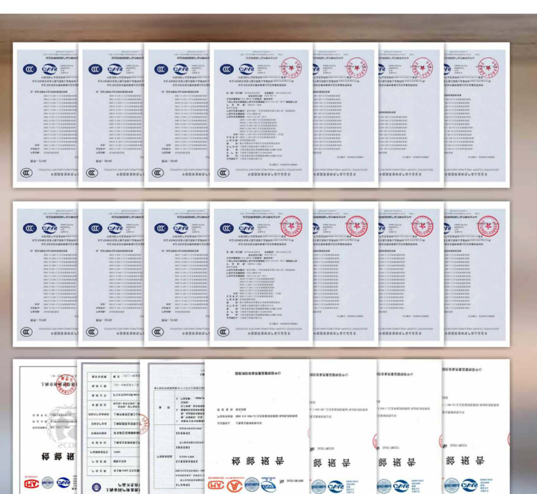

ISO 9001 / ISO 14001-related material
Quality-system certificate or reference material is visible in the supplied sample. Certificate holder, number, validity date and scope are not reliably readable from the available scan.
Request the original →The supplied pump sample contains quality and fire-pump standards references. This page identifies what is visible in the source material and what must still be requested for the exact model and project.What the source shows,
what the exact model
still needs.
“Source reference” means the item is shown or referenced in the supplied material. It does not mean Soar Pump owns the certificate, that every model is covered, or that an authority will accept it.
Quality-system certificate or reference material is visible in the supplied sample. Certificate holder, number, validity date and scope are not reliably readable from the available scan.
Request the original →The sample references GB 6245 in the fire-pump documentation context. Confirm the exact model, test method, edition and document status before using the reference in a bid.
Request model evidence →NFPA 20 is referenced for selected fire-pump applications in the source material. Project acceptance, listing status and AHJ requirements remain model- and location-specific.
Confirm project scope →This image is displayed as a source-material thumbnail only. It is not a Soar Pump certificate, and the readable scan does not establish holder, number, validity or model coverage.

The readable source scan does not establish a universal certificate covering every pump family. The document pack is assembled after the buyer gives the exact model or duty point.
| Fire pump packages | Request datasheet, curve, driver/controller scope, inspection or test evidence and any listing/certificate for the quoted package. |
|---|---|
| Electric and diesel families | Confirm whether the evidence applies to the pump, driver, controller or complete package; do not transfer a component certificate to the full system. |
| Non-fire pump families | ISG/ISW, sewage, multistage, self-priming, split-case and water-supply families require their own model datasheet and applicable market documentation. |
| Certificate holder | Not confirmed from the public source scan. Request the original certificate showing holder, issuing body, certificate number, date and scope. |
| Validity and market | Not confirmed from the public source scan. Verify validity at quotation and again before shipment where the destination requires it. |
| Authority acceptance | Must be confirmed by the buyer, project engineer or AHJ. A standards reference is not the same as project approval. |
Soar Pump is presented as a sourcing and project-support interface operated by 上海腾南贸易有限公司. The supplied manufacturer or source-company certificates are not represented as Soar-owned certifications, factory credentials or blanket approvals.
No UL, FM, NFPA, ISO, GB or local authority claim should be made from this page alone.
Send the model, duty point, destination market and required standard. We will identify the original documents still needed.